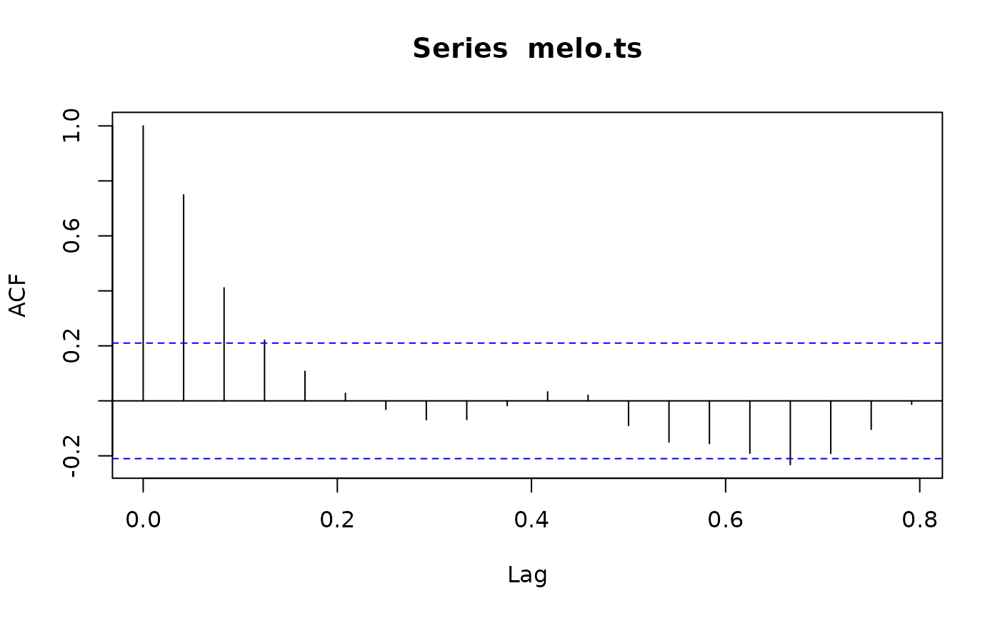
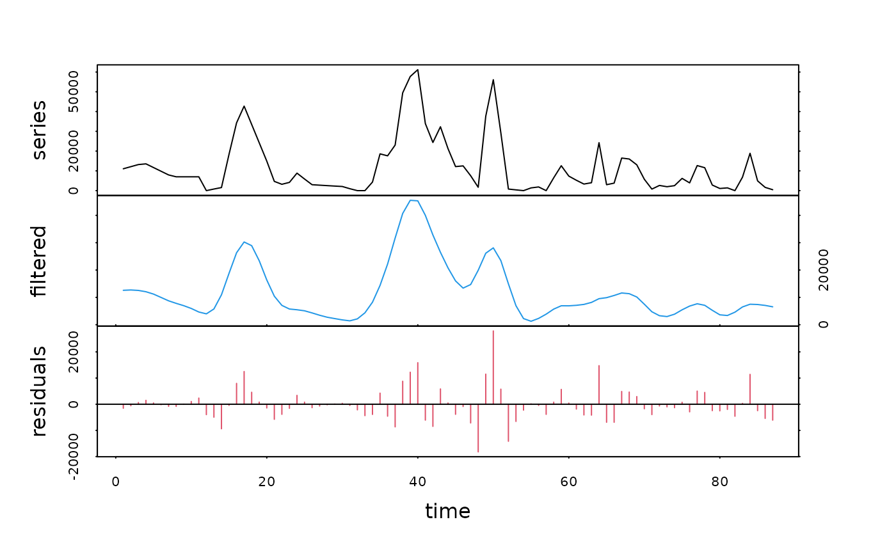
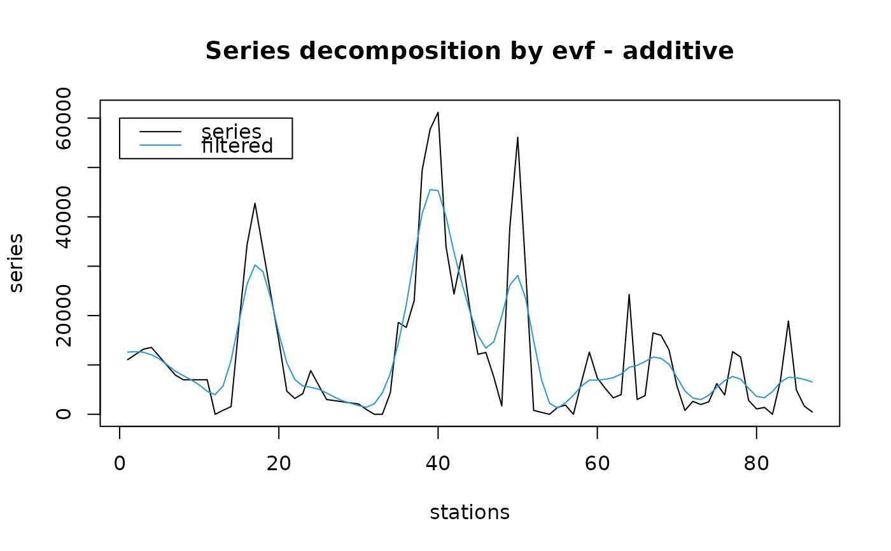

Time series decomposition using eigenvector filtering (EVF)
decevf.RdThe eigenvector filtering decomposes the signal by applying a principal component analysis (PCA) on the original signal and a certain number of copies of it incrementally lagged, collected in a multivariate matrix. Reconstructing the signal using only the most representative eigenvectors allows filtering it.
decevf(x, type="additive", lag=5, axes=1:2)Arguments
- x
a regular time series ('rts' under S+ and 'ts' under R)
- type
the type of model, either
type="additive"(by default), ortype="multiplicative"- lag
The maximum lag used. A PCA is run on the matrix constituted by vectors lagged from 0 to
lag. The default value is 5, but a value corresponding to no significant autocorrelation, on basis of examination of the autocorrelation plot obtained byacfin the library 'ts' should be used (Lag at first time the autocorrelation curve crosses significance lines multiplied by the frequency of the series).- axes
The principal axes to use to reconstruct the filtered signal. For instance, to use axes 2 and 4, use
axes=c(2,4). By default, the first two axes are considered (axes=1:2)
Value
a 'tsd' object
References
Colebrook, J.M., 1978. Continuous plankton records: zooplankton and environment, North-East Atlantic and North Sea 1948-1975. Oceanologica Acta, 1:9-23.
Ibanez, F. & J.C. Dauvin, 1988. Long-term changes (1977-1987) on a muddy fine sand Abra alba - Melinna palmate population community from the Western English Channel. J. Mar. Prog. Ser., 49:65-81.
Ibanez, F., 1991. Treatment of data deriving from the COST 647 project on coastal benthic ecology: The within-site analysis. In: B. Keegan (ed.) Space and time series data analysis in coastal benthic ecology. Pp. 5-43.
Ibanez, F. & M. Etienne, 1992. Le filtrage des séries chronologiques par l'analyse en composantes principales de processus (ACPP). J. Rech. Océanogr., 16:27-33.
Ibanez, F., J.C. Dauvin & M. Etienne, 1993. Comparaison des évolutions à long-terme (1977-1990) de deux peuplements macrobenthiques de la Baie de Morlaix (Manche Occidentale): relations avec les facteurs hydroclimatiques. J. Exp. Mar. Biol. Ecol., 169:181-214.
Examples
data(releve)
melo.regy <- regul(releve$Day, releve$Melosul, xmin=9, n=87,
units="daystoyears", frequency=24, tol=2.2, methods="linear",
datemin="21/03/1989", dateformat="d/m/Y")
#> A 'tol' of 2.2 in 'days' is 0.00602327173169062 in 'years'
#> 'tol' was adjusted to 0.00595238095238083
#>
melo.ts <- tseries(melo.regy)
acf(melo.ts)

# Autocorrelation is not significant after 0.16
# That corresponds to a lag of 0.16*24=4 (frequency=24)
melo.evf <- decevf(melo.ts, lag=4, axes=1)
plot(melo.evf, col=c(1, 4, 2))

# A superposed graph is better in the present case
plot(melo.evf, col=c(1, 4), xlab="stations", stack=FALSE, resid=FALSE,
lpos=c(0, 60000))
